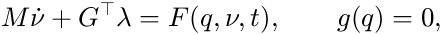

Nonlinear Model (Large Rotations)
The linear model (a.system, a.statespace) holds for small motions about one pose. For large rotations, e.g. a robot arm moving through its workspace, the same assembly gives a nonlinear multibody model:
m = a.nonlinear(Gravity = [0 0 -9.81]); % fembd.Model [t, y, x] = m.simulate([0 2], Step = 1e-3, ... Input = @(t, y) [KP1*(r1(t) - y.enc1); KP2*(r2(t) - y.enc2)]); plot(t, y.th1); m.animate(t, x, Rate = 0.5); % half speed
Contents
Formulation
Each rigid body has a frame at its centre of mass, with position r (world) and rotation R; its velocities are v (world) and omega (body frame). The equations of motion are

with the constant mass matrix M = diag(m I, J), the forces F (gravity, gyroscopic, joint springs and dampers, elastic transmissions, inputs) and the joint constraints g with Jacobian G.
- Joints and supports are exact nonlinear constraints: locked translations are components of the joint offset in the frame on A; locked rotations are dot products of frame axes, so a revolute joint keeps its axes aligned at any angle. Redundant constraints are dropped at the start (rank-revealing QR).
- Rigid transmissions and supported joints are constraints; elastic transmissions are springs and dampers.
- Time integration: generalised-alpha on the Lie group R3 x SO(3) of each body, with Newton iterations. Positions satisfy the constraints at every step and velocities are projected onto them. Rho (default 0.8) damps high frequencies numerically; 1 gives no numerical damping.
Coordinates and signals
- Joint coordinates are measured from the configuration in which the joint was created, as in a.pose: translations in the joint frame, rotations as the rotation vector of B relative to A (for a revolute joint the angle). Joint springs are relaxed there.
- Transmissions are relaxed (elastic) or held (rigid) at the initial configuration.
- Reference-point outputs are the displacement of the point and the rotation vector of the body, from the initial configuration.
- Inputs come from Input = @(t, y), evaluated with the outputs of the previous step (a controller sampled at the time step). Initial joint velocities: Rates = struct('joint', v).
Current limits
Rigid bodies only: elastic bodies (Craig-Bampton modes in a floating frame), couplings and ties are not supported yet. Outputs are displacements and velocities.
Verification
tests/runTests.m checks the model against the Lagrange equations of a double pendulum, the exact solution of a damped belt drive at large angles (linear for parallel axes), a rigid transmission under constant torque, a heavy top (energy and Euler equations) and free fall. All converge at second order in the time step.